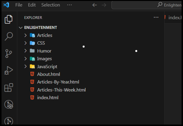

~4 Working With All Browsers~
2/12/2024
Setting Your Visual Studio Settings
Flexbox for the most part works pretty well, but it doesn’t always play nice with others. This is where vendor prefixing will come in handy.
There is something called the autoprefixer, which will help you with this, but you will need to install it in Visual Studio Code.
Open Visual Studio

Go to the left side and click on this icon that looks like 4 boxes with the top right one shooting out to the right.
Add to the search bar the text “autoprefixer” to find the extension that you will need.
Click on the blue button for it that says “Install”
You will see the information for the Autoprefixer on the right-hand side

Setting Your Visual Studio Settings
Open Settings in Visual Studio
Go to this wheel icon on the bottom left hand side of Visual Studio code.
Making Changes to JSON File
You are looking for the workspace settings for JSON, or you will not be able to edit it.
write workspace JSON in the search bar like this, and then click on this blue link here
You want to add some code to the JSON File
You will need to start by adding 2 commas to make this work. One comma goes after the last list item in the list, and another comma will be following the last curly brace. In order to add another item, the previous item must be closed out like this. Commas tell JSON that there is another item to look at.
Add a comma here, and here.
This is the code that you will be adding above, after that last command and before the yellow curly brace:
"autoprefixer.options": { "browsers": [ "last 4 versions", "ie >= 9", "> 5%" ] }
Make sure that yellow curly brace closes out the entire code for the JSON file. You can see that the code is correct if you color coding is not showing red.
Restart Visual Studio
Now you will want to shut down and restart Visual Studio
Select text you want prefixed

To turn ON your Autoprefixer
Select the text that you want to prefix and then hit F1, then from the drop down at the top of the app choose:
Autoprefixer:Run
Now look at our code. it added all those web fixes for us, so…. IT WORKS!
Prefix an Entire CSS Page
Now you can select all of your CSS on a CSS file and Autoprefixer will figure out what needs and what doesn’t need the prefix added to it. No need for you to just select the specific areas, where you might think things should go.

Press F1 on your Keyboard and select Autoprefixer:Run from the dropdown
Now you will notice all of your tags have been added to the code for you.